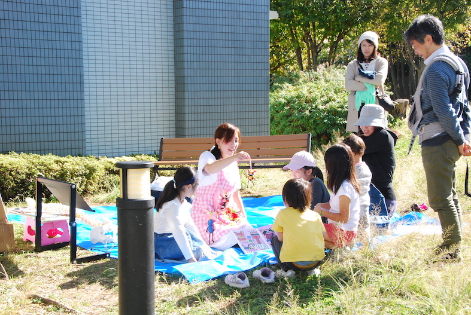

これまでの活動
（場所：もとすみよし みんなの市場）
ゆっぽの会は姿勢チェックをしています!! ▼出店者も募集中▼ https://kcscentermotosumi.jimdofree.com/more/元住吉フリマ出店申込みページ/


ゆっぽの会は姿勢チェックをしています!! ▼出店者も募集中▼ https://kcscentermotosumi.jimdofree.com/more/元住吉フリマ出店申込みページ/